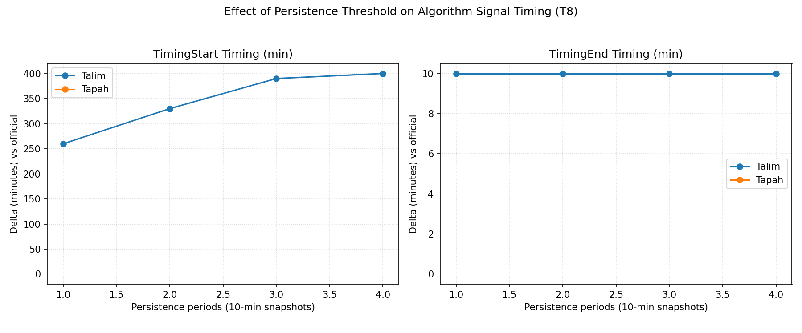

The Hong Kong Observatory (HKO) issues tropical cyclone warning signals based on wind conditions. However, the "expected to persist" criterion introduces subjectivity. This project aims to quantify the gap between official signals and observed ground-level data using an automated, transparent algorithm.
HKO Open Data API (10-minute mean winds).
8 stations: Cheung Chau, Chek Lap Kok, Kai Tak, Lau Fau Shan, Sai Kung, Sha Tin, Ta Kwu Ling, Tsing Yi.
Signal 8 Criteria: ≥4 stations with wind speed ≥63 km/h.
Persistence: Must sustain for ≥30 minutes (3 consecutive periods).

Fig 1. Effect of persistence settings on Signal 8 start/end timing (Typhoon Talim).
Delay in algorithmic detection vs. Official Start (Talim)
Lag in algorithmic End Time vs. Official End
Stations meeting T8 criteria for Typhoon Tapah (Strict Miss)
Forecast vs. Observation: The 6.5-hour delay in Talim confirms that HKO signals are largely predictive. Purely observation-based algorithms will always lag behind safety-first operational decisions.
The "Tapah" Edge Case: Official T8 was issued, but our algorithm found no station reaching 63 km/h (Max: 60.4 km/h at Cheung Chau). This highlights the role of human discretion in borderline cases.
Our "HKO Compliant Algorithm" provides a rigorous baseline for validation. While it confirms clear-cut events like Talim, it reveals that operational flexibility is essential for borderline cases and early warnings. A strict automated system would be too late and too rigid for public safety.